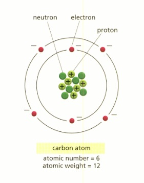
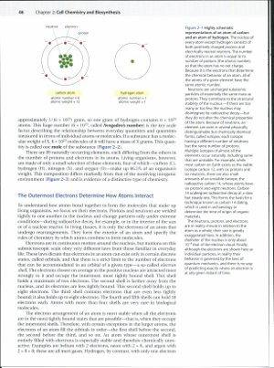

Sample 6: Carbon Atom
This image of a carbon atom is taken from a postsecondary chemistry textbook. The full page where it appears can be seen below.

View a larger version of this image.
Making This Image Accessible

View a larger version of this image.
This image can be made accessible with an image description, by creating a tactile graphic, or by printing a 3D object of the image. The choice of modality varies depending on factors such as the information to be conveyed, grade level, student knowledge and experience, and the image itself. Examples of image descriptions and tactile graphics appear elsewhere in this sample book; this example presents a 3D model of the image.
This is an example of an image in which the labels beneath the two parts of the drawing may be embedded in the image, in which case they will not be readable as live text by the user's assistive technology. The information in the caption needs to be included elsewhere, either in the image description or as braille labels on the object.
CAD or CAM software is needed to create 3D files and a 3D printer must be available to the user in order to print a 3D object once the file has been created.
More information and the digital model file for this object are available at http://www.thingiverse.com/thing:78490.